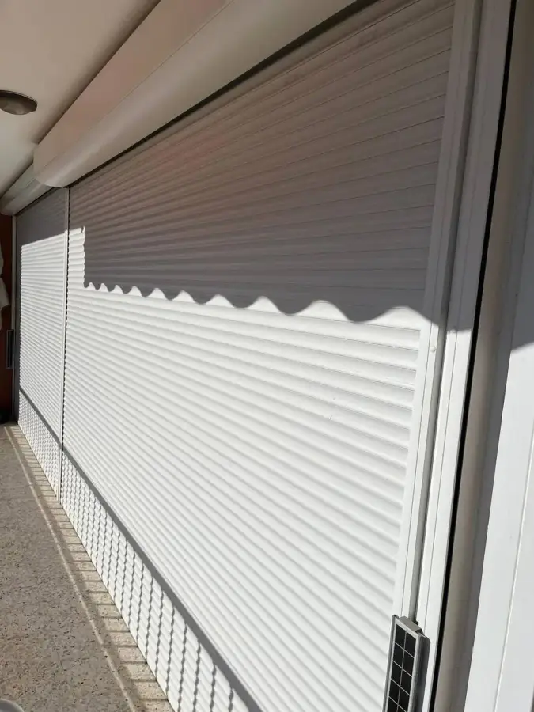

Vous cherchez le prix d'un volet roulant à Marseille avant de vous décider ? C'est le bon réflexe : entre un modèle manuel d'entrée de gamme et un volet solaire motorisé, la facture peut aller du simple au triple. Le volet roulant coche pourtant beaucoup de cases ici : il protège de la chaleur l'été, renforce la sécurité, améliore l'isolation et se pilote d'un bouton. Dans ce guide, on détaille les fourchettes de prix 2026 posées, les facteurs qui font grimper le devis et nos conseils d'artisan pour ne pas se tromper.

- Le prix d'un volet roulant posé
- Ce qui fait varier le prix
- Manuel, électrique ou solaire : que choisir
- Rénovation ou construction neuve
- Le volet roulant à Marseille : chaleur, mistral, sécurité
- Aides financières et TVA
- Entretien, pannes et durée de vie
- Combien de temps pour la pose ?
- Nos conseils d'artisan
- Foire aux questions
Le prix d'un volet roulant posé
Voici des fourchettes indicatives, pose comprise, constatées à Marseille et dans les Bouches-du-Rhône pour du matériel de qualité courante. Seul un devis après visite donne un prix juste : tout dépend des dimensions, de l'accès et du type de pose.
Fourchettes de prix selon la motorisation
| Type de volet roulant | Commande | Prix posé (par volet) |
|---|---|---|
| Manuel (sangle ou manivelle) | À la main | 250 – 450 € |
| Électrique filaire | Interrupteur mural | 400 – 650 € |
| Électrique radio | Télécommande / smartphone | 500 – 800 € |
| Solaire | Télécommande, sans câblage | 600 – 1 000 € |
Ce que comprend (ou pas) le devis
Un prix affiché ne veut rien dire sans le détail. Vérifiez toujours ce qui est inclus :
- La fourniture du volet sur mesure (coffre, tablier, coulisses, moteur).
- La pose complète : fixation, réglages, raccordement électrique le cas échéant.
- La dépose de l'ancien volet et l'évacuation des gravats en rénovation.
- La mise en service et le réglage des fins de course, souvent oubliés des devis low-cost.
Ce qui fait varier le prix
À logement égal, deux devis peuvent différer sensiblement. Voici les principaux leviers.
Les dimensions et le nombre de volets
- Plus le tablier est large et haut, plus le prix monte (matière et moteur plus puissant).
- Une baie vitrée ou une grande ouverture coûte logiquement plus qu'une petite fenêtre.
- Le volume commandé compte : équiper toute la maison d'un coup fait souvent baisser le prix unitaire.
Le matériau et le niveau de gamme
- L'aluminium (avec mousse isolante) est le standard : robuste, durable, bon isolant.
- Le PVC, un peu moins cher, convient aux petites et moyennes dimensions.
- Les options (lames orientables, détection d'obstacle, domotique) font monter la note.
Le type de pose
- Un volet en rénovation (coffre apparent, posé sur la fenêtre existante) est le plus simple et le plus rapide.
- Un bloc-baie (volet intégré à une fenêtre neuve) demande de remplacer la menuiserie : c'est l'occasion idéale, voyez notre guide pour changer ses fenêtres à Marseille.
- La difficulté d'accès (étage, échafaudage, façade délicate) influe sur le temps de pose et donc le prix.

Manuel, électrique ou solaire : que choisir ?
C'est l'arbitrage clé, et il dépend surtout de votre installation existante. En résumé :
| Critère | Manuel | Électrique | Solaire |
|---|---|---|---|
| Prix | € (le plus abordable) | €€ | €€ à €€€ |
| Câblage | Aucun | Nécessaire | Aucun |
| Confort | Effort manuel | Élevé | Élevé |
| Idéal pour | Petit budget | Neuf ou câblage prévu | Rénovation sans travaux |
En rénovation, le solaire est souvent le meilleur compromis : aucun fil à tirer, aucune saignée dans le mur, et le confort de la motorisation. On regarde ça ensemble lors de la visite : découvrez notre service de pose de volets roulants.
Rénovation ou construction neuve
Le contexte du chantier oriente le type de volet le plus adapté.
En rénovation : coffre apparent ou motorisation d'un volet existant
- Le volet en applique (coffre visible à l'extérieur ou à l'intérieur) se pose sans toucher à la fenêtre : rapide et propre.
- Si le tablier et le coffre sont sains, on peut parfois motoriser un volet manuel existant plutôt que tout remplacer.
- Le solaire brille ici : pas de câblage, pas de gros œuvre.
En neuf ou grosse rénovation : le bloc-baie intégré
- Le volet est intégré à la menuiserie neuve : coffre discret, finition impeccable.
- C'est le bon moment pour tout coordonner (fenêtre, volet, isolation) en une seule intervention.
- Le rendu est le plus esthétique, mais suppose de remplacer la fenêtre.
Le volet roulant à Marseille : chaleur, mistral, sécurité
Le climat et le bâti marseillais rendent le volet roulant particulièrement utile.
Une arme efficace contre la surchauffe estivale
- Fermé aux heures chaudes, le volet bloque le soleil avant la vitre et garde la pièce fraîche.
- Sur une façade plein sud ou plein ouest, l'écart de température ressenti est net.
- Couplé à une bonne fenêtre, il réduit le besoin de climatisation : un vrai geste sur la facture.
Résistance au mistral et sécurité du logement
- Un volet en aluminium bien posé encaisse le vent et protège la vitre.
- Fermé, il constitue une barrière dissuasive contre les intrusions.
- La qualité de la pose (coulisses, fixations) est déterminante : c'est là qu'un artisan local fait la différence. En savoir plus sur l'artisan.
Aides financières et TVA
Soyons clairs sur ce point, car le sujet prête souvent à confusion.
- Sur un logement de plus de deux ans, la pose bénéficie généralement d'une TVA réduite à 10 %, directement appliquée sur le devis.
- Le simple remplacement d'un volet n'est en général pas éligible à MaPrimeRénov', qui cible les gestes d'isolation lourds.
- En revanche, un volet performant intégré à un projet global de rénovation énergétique (avec les fenêtres) peut entrer dans un bouquet de travaux aidé, sous conditions.
Notre conseil : raisonnez sur le prix réel du devis, TVA comprise, plutôt que sur des aides hypothétiques. On vous dit clairement ce à quoi vous avez droit.
Entretien, pannes et durée de vie
- Entretien : un dépoussiérage des coulisses et un coup d'œil au tablier suffisent la plupart du temps.
- Pannes courantes : lames sorties de la coulisse, sangle cassée, moteur ou fin de course déréglé : la plupart se réparent.
- Durée de vie : un volet roulant de qualité, bien posé, dure facilement 15 à 20 ans, souvent plus pour l'aluminium.
Envie d'un prix précis pour vos volets roulants ?
Je viens prendre les mesures et je vous remets un devis clair et gratuit sous 48 h, à Marseille et dans les Bouches-du-Rhône et le Var.
Demander mon devis gratuitCombien de temps pour la pose ?
- Un volet en rénovation se pose généralement en 1 à 2 heures par ouverture.
- Équiper toute une maison prend le plus souvent une demi-journée à une journée, selon le nombre de volets et l'accès.
- On fixe la date ensemble après validation du devis, et le chantier est laissé propre en fin d'intervention.
Nos conseils d'artisan pour bien acheter
- Exigez un devis détaillé (fourniture, pose, dépose, mise en service) plutôt qu'un prix global flou.
- Méfiez-vous des prix trop bas : souvent, la dépose de l'ancien volet ou le réglage n'est pas compris.
- Privilégiez l'aluminium isolé pour les grandes dimensions et les façades exposées.
- En rénovation sans câblage, pensez au solaire : le confort du motorisé, sans les travaux.
- Choisissez un artisan local, joignable pour le réglage et l'après-vente.
Foire aux questions
Quel est le prix d'un volet roulant à Marseille ?
Comptez en moyenne 400 à 700 € posé pour un volet roulant électrique de taille standard, et 250 à 450 € pour un modèle manuel. Un volet roulant solaire se situe plutôt entre 600 et 1 000 € selon les dimensions et la motorisation.
Quelle motorisation choisir : filaire, radio ou solaire ?
Le filaire est le plus économique quand le câblage existe déjà. La commande radio évite de tirer des fils et permet le pilotage à distance. Le solaire ne demande aucun raccordement électrique : idéal en rénovation, sans travaux de câblage.
Un volet roulant protège-t-il vraiment de la chaleur à Marseille ?
Oui. Fermé aux heures chaudes, il bloque le rayonnement solaire avant qu'il ne traverse la vitre et peut faire baisser sensiblement la température d'une pièce exposée. C'est l'une des protections les plus efficaces contre la surchauffe estivale.
Peut-on motoriser un volet roulant existant ?
Souvent oui, si le coffre et le tablier sont en bon état : on remplace l'axe manuel par un moteur, avec une commande filaire ou radio. Quand le volet est ancien ou abîmé, un remplacement complet est plus fiable et durable.
En résumé
À Marseille, un volet roulant coûte le plus souvent entre 250 € (manuel) et 1 000 € (solaire motorisé), pose comprise. Le vrai réflexe : un devis détaillé, la bonne motorisation selon votre installation, et un artisan local pour une pose soignée. Vous avez un projet ? Demandez votre devis gratuit, je prends les mesures et je vous conseille la bonne solution.